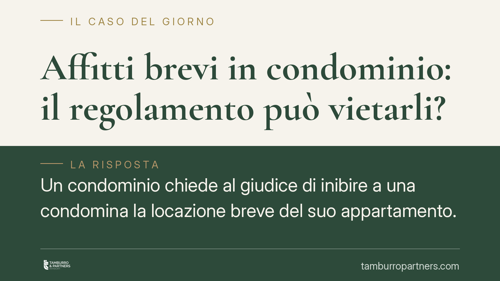

Affitti brevi in condominio: il regolamento può vietarli?
Un condominio chiede al giudice di inibire a una condomina la locazione breve del suo appartamento. Il Tribunale di Roma respinge la domanda: pubblicare annunci e avere ospiti in continuo ricambio non basta a dimostrare un'attività ricettiva vietata dal regolamento. La pronuncia chiarisce il confine tra locazione turistica e impresa alberghiera, e il peso dei divieti regolamentari.

Il caso
Un condominio agisce in giudizio contro una condomina che concede il proprio appartamento in locazione breve a fini turistici. Secondo il condominio, questa attività violerebbe il regolamento, che vieterebbe destinazioni d'uso diverse dalla civile abitazione e, in particolare, l'esercizio di attività ricettive.
Il Tribunale di Roma respinge la domanda. La ragione è anzitutto probatoria: la mera pubblicazione di annunci su piattaforme online e il frequente ricambio degli ospiti non dimostrano, di per sé, lo svolgimento di un'attività ricettiva d'impresa. Senza la prova di servizi tipicamente alberghieri (reception, pulizie quotidiane, somministrazione di pasti, cambio biancheria con cadenza fissa), si resta nell'alveo della locazione turistica, che è un uso abitativo del bene.
*(Nota: gli estremi esatti della pronuncia vanno verificati presso la fonte ufficiale prima di qualsiasi utilizzo processuale.)*
Inquadramento normativo
Il punto di partenza è la distinzione tra proprietà esclusiva e parti comuni.
I limiti all'uso dell'unità immobiliare di proprietà esclusiva possono derivare solo da un regolamento di natura contrattuale: cioè predisposto dall'originario costruttore e accettato nei singoli atti d'acquisto, oppure approvato all'unanimità dai condomini. Un regolamento di tipo assembleare (approvato a maggioranza ai sensi dell'art. 1138 c.c.) disciplina l'uso delle parti comuni e la vita condominiale, ma non può comprimere le facoltà di godimento che il proprietario ha sul proprio appartamento.
Questa è la ragione per cui i divieti d'uso sulle unità private hanno fondamento contrattuale e non assembleare. L'art. 1117-ter c.c., che consente di modificare la destinazione d'uso delle parti comuni con maggioranza qualificata, riguarda un tema diverso e non costituisce la base dei divieti relativi alle proprietà esclusive.
Anche quando il divieto esiste ed è contenuto in un regolamento contrattuale, deve essere espresso e specifico. La giurisprudenza interpreta in modo restrittivo le clausole che limitano i diritti dei singoli: le compressioni delle facoltà di godimento non si presumono e non si ricavano in via analogica. Un divieto generico di "attività commerciali" o di "usi diversi dall'abitazione" non si estende automaticamente alla locazione turistica, che resta un uso abitativo.
Implicazioni pratiche
Per il condominio che intende contrastare le locazioni brevi, la pronuncia alza l'asticella probatoria. Non basta allegare annunci online o lamentare il viavai di ospiti: occorre dimostrare, da un lato, l'esistenza di un divieto regolamentare chiaro e di natura contrattuale, dall'altro che l'attività concretamente svolta ha i tratti dell'impresa ricettiva e non della semplice locazione.
Per il proprietario, la locazione turistica è in linea di principio un legittimo esercizio del diritto di proprietà. I margini di rischio si aprono quando il regolamento contiene divieti specifici e trascritti, oppure quando all'affitto si affiancano servizi alberghieri che spostano l'attività verso una gestione d'impresa.
Resta ferma la distinzione tra il piano civilistico-condominiale qui esaminato e quello amministrativo (requisiti regionali, comunicazioni, codici identificativi), che segue regole proprie.
Cosa fare in concreto
Se sei un condominio:
- Verifica la natura del regolamento (contrattuale o assembleare) e se contiene un divieto espresso e specifico delle locazioni turistiche.
- Controlla che il regolamento sia stato richiamato o trascritto negli atti d'acquisto delle singole unità.
- Documenta eventuali servizi para-alberghieri e le concrete immissioni o pregiudizi, non il solo ricambio degli ospiti.
Se sei un proprietario:
- Leggi il regolamento e il tuo atto d'acquisto per individuare clausole limitative del godimento.
- Mantieni l'attività nell'ambito della locazione, evitando servizi tipici dell'impresa ricettiva se non sei strutturato come tale.
- Adempi agli obblighi amministrativi previsti dalla tua Regione e dal Comune.
Disclaimer
Contributo informativo a cura di Tamburro & Partners Avvocati. Non costituisce parere legale.
Ogni condominio ha una storia a sé.
Se gestisci un'amministrazione e vuoi un confronto su una specifica questione condominiale, scrivi allo studio. Ti rispondiamo entro un giorno lavorativo.